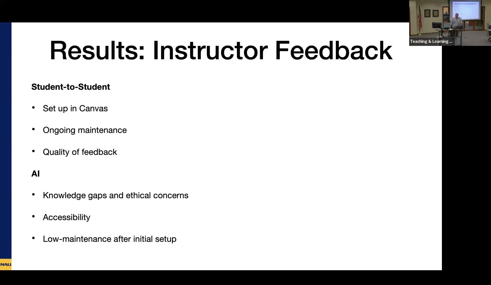

AI as Peer Reviewer in Social Work Writing Courses
Comparing ChatGPT feedback to student peer review in an online social work policy writing course.
Presented by Kiley Huntington, Assistant Clinical Professor of Social Work, Northern Arizona University
About This Project
Social Work 320W at NAU is an asynchronous online writing-intensive course in which students complete an 18-to-21-page research paper through three staged submissions across the semester. Persistent challenges included inconsistent writing quality, APA formatting errors, and the logistical burden of Canvas-based peer review. Huntington designed a controlled comparison: one section of 16 students completed traditional student-to-student peer review; a second section of 17 students received feedback from ChatGPT using instructor-provided prompts. Both were compared against a fall 2023 control section that received no peer review.
On every measure, both review conditions outperformed the no-review control. The AI group finished with an 87 percent average final paper grade and a 90 percent average course grade; the student-to-student group finished at 84 and 87 percent, respectively. Students in the AI group rated the feedback process higher on timeliness and ease, and 84 percent reported that the AI feedback improved the clarity and coherence of their writing. APA formatting remained a weakness across both conditions. A notable logistical finding was that Canvas peer review required ongoing instructor maintenance throughout the semester, while the AI approach required only the initial prompt design. No students withdrew from the AI group; one withdrew from the student-student group.
Project Highlights

